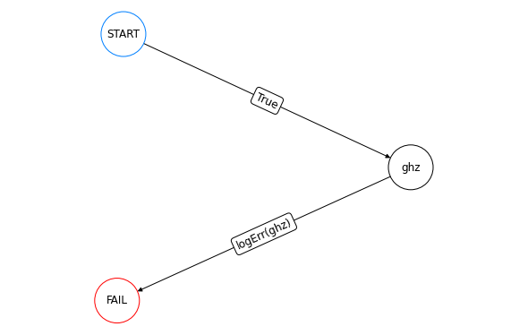
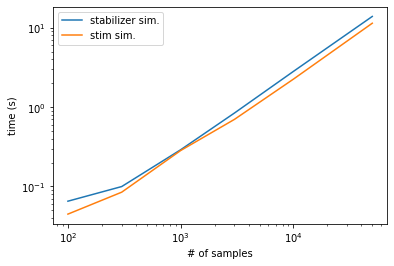

import qsample as qs
import time
import stim
import numpy as np
import matplotlib.pyplot as plt
import time
import reghz = qs.Circuit([ {"init": {0,1,2,3,4}},
{"H": {0}},
{"CNOT": {(0,1)}},
{"CNOT": {(1,2)}},
{"CNOT": {(2,3)}},
{"CNOT": {(3,4)}},
{"CNOT": {(0,4)}},
{"measure": {4}} ])
# Define protocol for 1 round of repetition
def logErr(msmt_list):
return msmt_list[-1] == 1 # If True transition to FAIL
functions = {'logErr': logErr}
ghz1 = qs.Protocol(check_functions=functions, fault_tolerant=False)
ghz1.add_node('ghz', circuit=ghz) # Add node with corresponding circuit
ghz1.add_edge('START', 'ghz', check='True') # Transition START -> first circuit node always True
ghz1.add_edge('ghz', 'FAIL', check='logErr(ghz)')ghz1.draw(figsize=(8,5))
err_model = qs.noise.E1
q = [1e-5, 1e-3, 1e-1, 0.5]
err_params = {'q': q}begin = time.time()
ss_sam = qs.SubsetSampler(protocol=ghz1, simulator=qs.StabilizerSimulator, p_max={'q': 0.1}, err_model=err_model, err_params=err_params, L=3)
ss_sam.run(1000)
end = time.time()
qsample_time = end-beginqsample_times = []
stim_times = []
samples = [100, 300, 1000, 3000, 10000, 50000]
for s in samples:
begin = time.time()
ss_sam = qs.SubsetSampler(protocol=ghz1, simulator=qs.StabilizerSimulator, p_max={'q': 0.01}, err_model=err_model, err_params=err_params, L=3)
ss_sam.run(s)
end = time.time()
qsample_times.append(end-begin)
begin = time.time()
ss_sam = qs.SubsetSampler(protocol=ghz1, simulator=qs.StimSimulator, p_max={'q': 0.01}, err_model=err_model, err_params=err_params, L=3)
ss_sam.run(s)
end = time.time()
stim_times.append(end-begin)plt.plot(samples, qsample_times, label = 'stabilizer sim.')
plt.plot(samples, stim_times, label = 'stim sim.')
plt.legend()
plt.xscale('log')
plt.yscale('log')
plt.ylabel('time (s)')
plt.xlabel('# of samples')
print('Average ratio of stim time/stabilizer time: {:.2f}'.format(np.average(np.array(stim_times)/np.array(qsample_times))))Average ratio of stim time/stabilizer time: 0.83